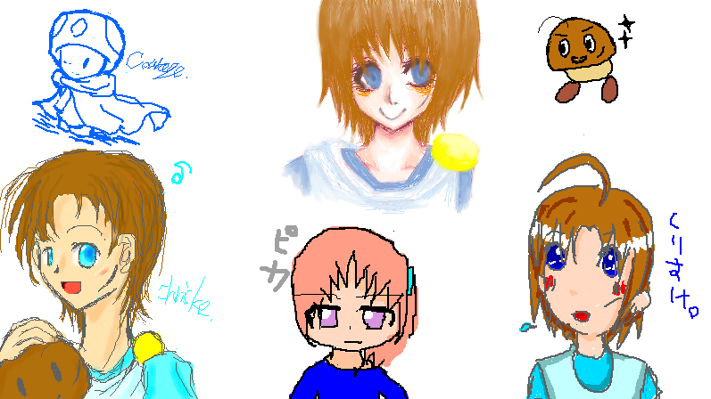

星空の奇跡色。一周年記念四勇者絵チャット開催！
８月５日に行われた、四勇者絵チャットのログですー！ｖ
ははは、まさか四勇者絵チャにあそこまで票が集まるとは（笑。
とりあえず色々と落書きしつつ、気がついたら朝方までフィーバーしておりました…！
途中でスイッチが壊れたような気もしますがきっと気のせいです、げふんげふん。
それではログ並べ参りますー、ログは全部で３枚ですが、
一枚は裏（おい）、もう一枚は原版別館行きとなったのでこちらのページには一枚のみ。
それでは、どどーん！

いやあのちょっと待って下さい。
最初は軽く落書きから参りましょうかー、との事だったのです が。
…えっ？あれ？ちょっと待って？何ですかこのクリスケ祭り。
大変だ…他の方が描いて下さった美麗イラストだからって、自分の子って忘れて掻っさらってしまいｔ（待ちなさい。
ええと、左一列は星詩里音、中央上段＆右上段は燦子さん、中央下段はピカピカさん、右下段は水紅さんですー！
すいません、普通にメモるの忘れてたのでorz
「間違ってるぞ馬鹿！」な部分がありましたら容赦なくツッこんで下さげふげふ；
自分の子なのに人様に描いてもらうと惚れてしまうのはやはり何かの方程式でしょうか？（……）
とにかく、自分はキャンパスの前でギャーギャー言っていた気がします（笑。
残りのログは裏と原版別館に。
まだまだ四勇者祭りは終わりません（笑。
とりあえず、描いて下さった皆さんありがとうございましたーっ！ｖ